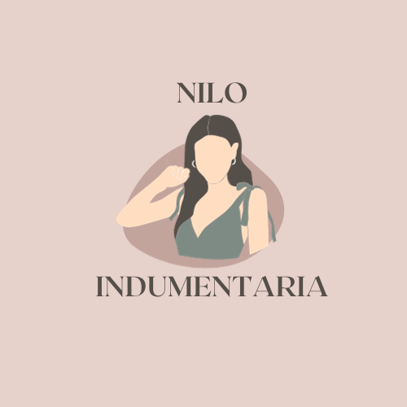

Nilo Indumentaria
¿Quienes somos?
Nilo Indumentaria es un pequeño emprendimiento de venta de indumentaria que cuenta con dos showrooms, uno ubicado en Villa Elisa y otro en Oro Verde, en la provincia de Entre Ríos.
Nuestra misión es luchar contra el talle único, ya que este solo representa a un pequeño porcentaje de las mujeres. Así cada clienta pueda comprar la ropa que le guste y en su talle.

clic aqui